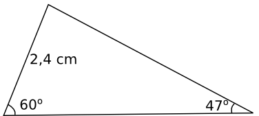

8. Cosinussatsen
Cosinussatsen, eller Pythagoras utvidgade sats, är ett redskap med vars hjälp vi kan bestämma längden av sidorna i vilken triangel som helst då vi vet en vinkel.
Härledning av cosinussatsen:
Cosinussatsen lyder som \( a^2=b^2+c^2-2bc\cos\alpha \).

Exempel 1 Bestäm längden av den tredje sidan i triangeln.

Exempel 2 Visa att en triangel med sidorna \( \sqrt{5} \), \( 2\sqrt{5} \) och 5 är rätvinklig.
Uppgifter
- Vad har vi för nytta av cosinussatsen? Hur skiljer sig cosinussatsen från Pythagoras sats?
Pythagoras sats kan vi endast använda i rätvinkliga trianglar. Cosinussatsen kan vi använda då vi har spetsiga eller trubbiga trianglar. I Cosinussatsen jobbar vi med alla tre längder och vinkeln mellan två sidor. Då vi vet tre av dessa kan vi räkna ut värdet av den fjärde.
Bestäm längden och storleken av de delar i triangeln som vi inte vet.

Längden av den tredje sidan: Cosinussatsen ger \( x^2=8,5^2+6,4^2-2\cdot8,5\cdot6,4\cos46^{\circ} \Leftrightarrow x=6,134 = 6,1 \) cm.
Vinkeln mot sidan 6,4 cm: Sinussatsen ger \( \dfrac{6,4}{\sin\alpha}=\dfrac{6,13}{\sin46^{\circ}} \Leftrightarrow \alpha=48,679 = 48,7^{\circ} \).
Vinkeln mot sidan 8,5 cm: \( 180-(46+48,679\ldots)=85,32\ldots=85,3^{\circ} \).
Bestäm längden och storleken av de delar i triangeln som vi inte vet. Svara med en decimals noggrannhet.

Cosinussatsen ger \( 11,2^2=8,3^2+x^2-2\cdot 8,3 \cdot x \cos 88^{\circ} \) ger \( x=-7,236 \) och \( x=7,815 \).
Längden är alltså 7,8 cm .
Sinussatsen, \( \dfrac{\sin\alpha}{8,3}=\dfrac{\sin 88^{\circ}}{11,2} \) ger \( \alpha = 47,78 = 47,8^{\circ} \).
Storleken av den tredje vinkeln är \( 180^{\circ}-(88^{\circ}+47,78^{\circ})=44,22^{\circ}=44,2^{\circ} \).
Bestäm längden och storleken av de delar i triangeln som vi inte vet. Svara med en decimals noggrannhet.

Sinussatsen ger \( \dfrac{x}{\sin 60^{\circ} } =\dfrac{2,4 \text{ cm} }{\sin 47^{\circ} } \) ger \( x=2,84\ldots \approx 2,8 \) cm.
Sista vinkeln är \( 180^{\circ} - (60^{\circ} + 47^{\circ}) = 73,0^{\circ} \).
Den tredje längden får vi via sinus eller cosinussatsen, ingen skillnad.
Cosinussatsen ger \( x^2 = 2,4^2 +2,84^2 - 2 \cdot 2,4 \cdot 2,84 \cos 73^{\circ} \). Vi får \( x = 3,13\ldots \approx 3,1 \) cm.
- En svampplockare rör sig först 1,8 km rakt österut. Sedan rör hen sig 0,90 km sydost. Hur långt från startplatsen befinner sig svampplockaren? Beakta gällande siffror.
Cosinussatsen ger: \( x^2=1,8^2+0,9^2-2\cdot1,8\cdot0,9\cos(90^{\circ}+45^{\circ}) \). \( x=2,518 \) km.
2,5 km
Bestäm arean av tomten i figuren.
 Dela in fyrhörningen i två trianglar och utnyttja sinus- och cosiussatsen. Visst kommer du ihåg hur man kan räkna arean för en triangel?62,5 ar.
Dela in fyrhörningen i två trianglar och utnyttja sinus- och cosiussatsen. Visst kommer du ihåg hur man kan räkna arean för en triangel?62,5 ar.- En båtförare har köpt en ny kompass men har glömt att kontrollera om kompassen visar rätt. Båtföraren kör 12,3 sjömil från utgångspunkten i kompassriktningen 137o och observerar att hen har kommit till ett skär som ligger 2,1 sjömil från den ö som var målet för resan. Hur många grader fel visade kompassen? Avståndet från utgångspunkten till det rätta resmålet är 11,9 sjömil.
För en kompass så använder man 0o för en riktning rakt norrut, 90o rakt mot ost, 180o rakt söderut och 270o för en riktning västerut.
Vi får följande figur. Märk att vi inte behöver vinkeln 137o.

Vi bildar ekvationen \( 2,1^2 = 11,9^2 + 12,3^2 -2 \cdot 11,9 \cdot 12,3 \cos \alpha \).
\( \alpha = 9,775^{\circ} \).
Alltså visar kompassen 9,8o fel.
- Visa att följande trianglar är rätvinkliga. Längden på sidorna är
- \( \sqrt{2}, 2\sqrt{2} \) och 2.
Vi får att \( (2\sqrt{2})^2=4\cdot 2 = 8 = (\sqrt{2})^2+2^2 \). Triangeln är rätvinklig.
- \( \sqrt{3}, 2\sqrt{3} \) och 3.
Vi får att \( (2\sqrt{3})^2=4\cdot 3 = 12 = (\sqrt{3})^2+3^2 \). Triangeln är rätvinklig.
- \(2, 3 \) och \( \sqrt{13} \).
Eftersom \( 3 < \sqrt{13} < 4 \) så är det hypotenusan. Alltså \( 2^2 + 3^2 = 13 = (\sqrt{13})^2 \). Triangeln är rätvinklig.
- \( \sqrt{2}, 2\sqrt{2} \) och 2.
- Är en triangel med sidorna angivna i momenten rätvinklig? Bestäm hypotenusan om triangeln är rätvinklig.
- Sidorna 6, 8 och 10.
Jo eftersom \( 6^2 + 8^2 = 36 + 64 = 100 = 10^2 \). Hypotenusan är 10.
- Sidorna 6, 4 och \( \sqrt{10} \).
Längsta sidan är \( 6 \) lång. Om triangeln är rätvinklig så skall följande gälla: \( 6^2=4^2+(\sqrt{10})^2 \Leftrightarrow 36 \not=16+10 \). Alltså nej!
- \( 2\sqrt{a}, a-1 \) och \( a+1 \) då \( a>0 \)
Vilken är den längsta sträckan? \( a+1 \) eller \( 2\sqrt{a} \)?
Den längsta sträckan är \( a+1 \). Om triangeln är rätvinklig gäller att
\( \begin{array}{rcl} (a+1)^2 &=& (a-1)^2+(2\sqrt{a})^2 \\ a^2+2a+1 &=& a^2-2a+1+4a \\ a^2+2a+1 &=& a^2+2a+1\\ \end{array} \)
Triangeln är alltså rätvinklig.
- Sidorna 6, 8 och 10.
- Betrakta triangeln i figuren nedan. Beräkna längden av sidan \( a \) exakt. Ge även ett närmevärde med två decimaler. [H12, 4b)]

Cosinussatsen ger, \( a^2=2^2+3^2-2\cdot2\cdot3 \cos 30^{\circ} = 4+9-12\cdot\dfrac{\sqrt{3}}{2}= 13-6\sqrt{3} \).
\( x=\sqrt{13-6\sqrt{3}}\approx 1,61 \).
- Härled cosinussatsen då \( \alpha \) är spetsig.
Vi börjar med att rita en bild.

Vi bildar uttrycken \( h^2 + (a-u)^2 = c^2 \) och \(h^2 + u^2 = b^2 \).
Eftersom bägge uttryck innehåller \( h^2 \) får vi \( c^2 -(a-u)^2 = b^2-u^2 \). Vi förenklar och kommer till \( c^2 = a^2+b^2 -2au \).
Vi bildar \( \cos \gamma = \dfrac{u}{b} \), alltså \( u = b\cos \gamma \).
Vi sätter in det i uttrycket \( c^2 = a^2+b^2 -2au \).
Vi får \( c^2 = a^2+b^2 -2ab\cos\gamma \).